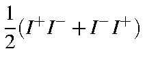

The fundamental spin operators have the following
effects:
| Sx2+Sy2 | = | (I+I-)+i(SxSy-SySx) |
| = | (I-I+)+i(SySx-SxSy) | |
| = |  |
For any microstate Y,
the expectation value of the S2 operator is
given by


| <yiyj> | = | <mimi> | = | d(i,j) |
| <yiyk> | = | d(i,k) | ||
| <yiyk> | = | d(j,k) |
When all four M.O.s have the same spin, the effect of the spin operator is to reverse the spin of two M.O.s in the ket half of the integral. By spin orthogonality this results in an integral value of zero.
In the case where two M.O.s are of a
spin and two are of b
spin,
the matrix elements, after elimination of those terms which are zero due to
space orthogonality, are
Thus, only if yi
and yj
are spatially identical with yk
and yl will
<Ya|S2|Yb>
be non-zero. The phase-factor W is such
that if i=k and j=l then W=-1, and if i=l and j=k then W=1; for all
other cases the matrix element is zero, so the phase of W is irrelevant. For
these two cases, the matrix element is
<Ya|S2|Yb>
= 1
if
 ,
otherwise
<Ya|S2|Yb>
= 0.
,
otherwise
<Ya|S2|Yb>
= 0.